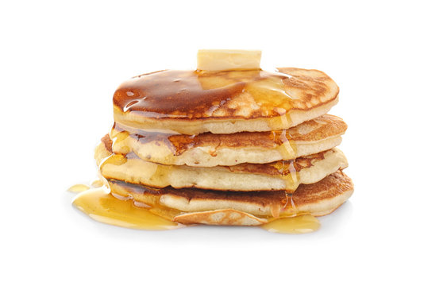

Home
Pancakes Recipe

Description
Pancakes are a classic breakfast food that are quick and easy to make.
They are fluffy, light, and can be topped with a variety of delicious ingredients
such as syrup, fresh fruit, or whipped cream.
Equipment
- Mixing Bowls
- Whisk
- Measuring Cups
- Spatula
- Griddle or Non-stick Pan
Ingredients
- 1 cup all-purpose flour
- 2 teaspoons baking powder
- 2 tablespoons white sugar
- 1/2 teaspoon salt
- 1 cup milk
- 2 tablespoons melted butter
- 1 large egg
Steps
- In a large mixing bowl, whisk together the flour,
baking powder, sugar, and salt.
-
In another bowl, mix the milk, egg, and melted butter until smooth.
-
Pour the wet ingredients into the dry ingredients and stir until just combined.
Do not overmix; a few lumps are okay.
-
Heat a griddle or non-stick pan over medium heat. Lightly grease with butter or oil.
-
Pour 1/4 cup of batter onto the griddle for each pancake.
-
Cook until bubbles form on the surface of the pancakes and the edges look set,
about 2-3 minutes. Flip and cook for another 1-2 minutes until golden brown.